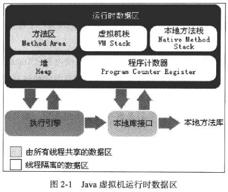

第2章 Java内存区域与内存溢出异常
2.2 运行时数据区域

2.2.1 程序计数器（Program Counter Register）
- 较小的内存空间
- 字节码的行号指示器
- “线程私有”
- 无OutOfMemoryError情况
2.2.2 Java虚拟机栈
- 线程私有，生命周期与线程相同
- 方法的调用过程对应着一个栈帧（Stack Frame）在虚拟机栈中入栈到出栈的过程
- 栈帧存储方法的局部变量表、操作数栈、动态链接、方法出口等信息
- 局部变量表存放了编译期可知的各种基木数据类型、对象引用(reference)、returnAddress类型
- 局部变量表所需的内存空间在编译期间已经确定
- 两种异常状况：
- 如果线程请求的栈深度大于虚拟机所允许的深度，将抛出StackOverflowError异常
- 如果虚拟机栈可以动态扩展，如果扩展时无法申请到足够的内存，就会抛出OutOfMemoryError异常
2.2.3 本地方法栈（Native Method Stack）
- 类似虚拟机栈，为调用Native方法服务
- 也会抛出StackOverflowError和OutOfMemoryError异常
2.2.4 Java堆（heap）
- 被所有线程共享的一块大内存
- 所有的对象实例以及数组都要在堆上分配
- 堆是垃圾收集器管理的主要区域
- 物理上不连续、逻辑上是连续的即可
- 如果在堆中没有内存完成实例分配，并且堆也无法再扩展时，将会她出OutOfMemoryError异常
2.2.5 方法区（Method Area, Non-Heap）
- 被所有线程共享
- 存储类信息、常量、静态变量、JIT编译后的代码等
- 为堆的一个逻辑部分
- 可以不实现垃圾收集，这区域的内存回收目标主要是针对常量池的回收和对类型的卸载
2.2.6 运行时常量池（Runtime Constant Pool）
- 存放各种字面量和符号引用
- 运行期间也可能将新的常量放人池中
2.2.7 直接内存
- 不是虚拟机运行时数据区的一部分
- 超过物理内存的限制，可导致OutOfMemoryError异常
- NIO的DirectByteBuffer对象直接操作这块内存的引用
- 设置-Xmx
2.3 HotSpot虚拟机对象探秘